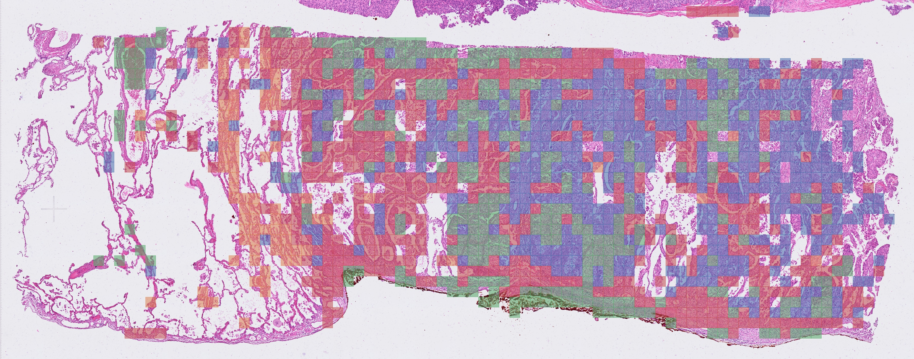
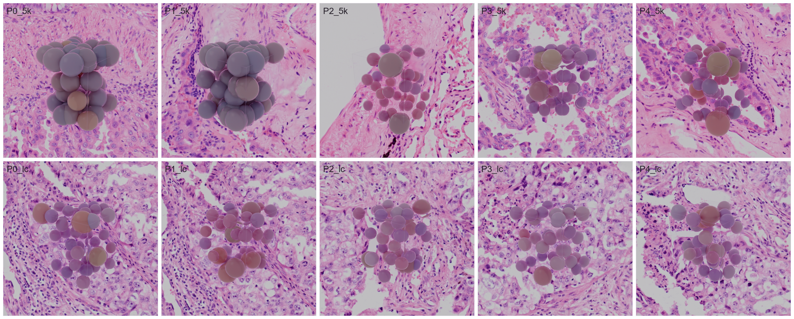
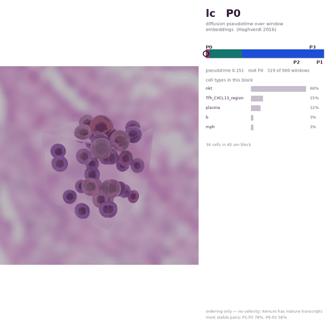

1. What this run does
Zhang et al., Genome Medicine 2025;17:98 tile H&E slides, cluster the tiles contrastively into 64 groups, correlate the cluster centroids, and merge them with a BIC-selected Gaussian mixture into ~15 histomorphological phenotypes. Every patient then becomes a vector of phenotype fractions. The imaging conventions here follow that paper's own code (ZhoulabCPH/HIPOS) 鈥?224 px tiles, a tissue-coverage filter, Reinhard stain normalisation, a contrastively trained CNN 鈥?and the input contract follows GHIST+, which asks for an aligned H&E together with a nuclei mask and matched expression.
2. Getting the image onto the cells
The Xenium cell coordinates are in microns; the H&E is in pixels. 10&x ships he_imagealignment.csv for exactly this, and using it naively put the cells in the wrong place 鈥?its linear part implies 1.288 px/碌m while the OME metadata on the same TIFF says 0.2738 碌m/px, a factor 2.84 apart. Whichever one is believed, the translation term does not correspond.
So the transform was fixed from independent evidence, one component at a time:

3. Tiles, three modalities
| slide | tiles kept | tile px | 碌m/px | tile 碌m | cells in frame |
|---|---|---|---|---|---|
| 5k | 722 | 224 | 1.08 | 243 | 96.8% |
| lc | 1,364 | 224 | 0.50 | 112 | 94.5% |
Tiles are 224脳224 at ~1 碌m/px, non-overlapping, keeping only those with 鈮?0% stained tissue and 鈮?0 cells. Tissue is detected by colour, not darkness: Otsu on luminance rejected almost every tile because a tile that is entirely tissue still splits its own histogram near the middle.
What goes into a tile's feature vector
4. Results
| modalities | block dims | tiles | fine clusters | phenotypes |
|---|---|---|---|---|
| image + expression + annotation | 182 | 2086 | 64 | 5 |
| image only | 128 | 2086 | 64 | 4 |
| expression + annotation | 54 | 2086 | 64 | 8 |
| expression only | 32 | 2086 | 64 | 8 |
5k 鈥?representative tiles per phenotype

5k 鈥?where the units sit on the section

5k 鈥?composition

lc 鈥?the same three panels on the second slide


5. What the ablations say
The count is not the result and should not be read as one 鈥?G is whatever BIC picks on a 64脳64 correlation matrix, and that quantity moves for reasons that have nothing to do with biology. What the ablation is for is the gallery: a phenotype that survives in the image-only run and in the expression-only run is one both modalities agree on. Read the panels, not the row counts.
The G upper bound is capped at 15. Left uncapped the BIC keeps improving as components are added, since 64 points in 64 dimensions can always be fitted better by more Gaussians 鈥?an early run picked 30 "phenotypes" for 2,086 tiles, which is curve fitting rather than structure.
6. The learned patterns as a 3D model
Each pattern is shown as a block of cells: the tissue its windows came from, with every cell drawn as a membrane, a cytoplasm and a nucleus. Two published pieces supply the construction — CellSqueeze3D (Kong & Lu, Adv Sci 2026) for the physical constraints on where a cell centre can sit inside a section, and Alon et al. for building the result as explicit primitives rather than a voxel volume, so the phenotype stays legible inside the model.
Volume render
The Blender route was abandoned too early the first time. The mistake was the model, not the renderer: the 3D geometry was being inverted from the segmented 2D area, which needed an identifiability argument and still left residual overlap. The construction used here is simpler and better behaved, and it is the one the Annotile project settled on:


7. Do the patterns lie on a progression?
The obvious next question is whether these five patterns are stages of something. The closest published precedent is Vig, Wu & Lotter, who embed H&E patches with a foundation model, run diffusion pseudotime (Haghverdi et al. 2016) over the embeddings, and read the result as disease progression 鈥?describing the output as a "morphological movie" assembled from static snapshots. The same construction is used here, on the window embeddings.
And there is no ordinal ground truth. The reference paper scores its ordering with Kendall's 蟿 against disease stages and runs a permutation test over all stage orderings. These patterns are tissue archetypes, not stages, so that test is not computable. What is reported instead is how cleanly each pattern occupies a band of the axis, and how often the ordering survives resampling.
What came out
| slide | order along the axis | median pseudotime | most fragile pair |
|---|---|---|---|
| 5k | P3 鈫?P2 鈫?P4 鈫?P0 鈫?P1 | 0.201, 0.246, 0.247, 0.282, 0.420 | P0鈥揚2 (60% of resamples) |
| lc | P0 鈫?P3 鈫?P1 鈫?P4 鈫?P2 | 0.118, 0.212, 0.213, 0.222, 0.269 | P0鈥揚2 (10% of resamples) |
Read the numbers rather than the arrows. On 5k the medians run 0.201 鈫?0.420, but four of the five sit between 0.246 and 0.282: the axis does not separate them, it stacks them. The resampling agrees 鈥?most pairs keep their relative order in 95%+ of resamples, but P2鈥揚4 holds only 72%. The honest reading is that these are parallel tissue archetypes with a weak ordering, not a lineage. An earlier version of this analysis built a minimum spanning tree over five centroids and produced a tidier-looking chain; that was a weaker object, and the tighter picture it drew was not better evidence.
The movie
Each frame walks the axis and shows the 3D block of whichever pattern the axis is passing through, with the pattern's own cell-type composition beside it. This is what the reference paper calls a morphological movie: an animation of an ordering fitted to static snapshots, not of observed time.


8. Step-by-step comparison with Annotile
Annotile solves the same problem and, step for step, does most of it better. This table is read against its source, not its prose.
| step | here | Annotile | verdict |
|---|---|---|---|
| cell labels | all annotations used as given | keep_label drops low_feat_cell, mph_CXCL9_region, fib?, lymph_endo?CCL19 and any other ? label except epi?/endo? | theirs. Ours let the densest patch land on a low-quality cell run; that is exactly what happened to P0 and P2 before the fix. |
| window size | 224 px of the H&E pyramid 鈥?243 碌m on 5k but 112 碌m on lc | 400 碌m in micron space, identical on every slide | theirs, decisively. A tile defined in pixels is a different amount of tissue on each slide, so the same pattern cannot mean the same thing in both. This is the most serious flaw in our chain. |
| minimum cells | 鈮?0 cells and 鈮?0% stained tissue | 鈮?0 cells | theirs; 10 is low enough to keep windows whose composition is mostly noise. |
| H&E registration | rotation from the matrix, scale measured from cell size, translation by second-moment matching | the matrix as shipped, with a brightness check: if the median crop is 鈮?35 the inverse is used instead | theirs for effort, ours for evidence. Their check resolves only the direction, yet it evidently suffices. Our elaborate fit was driven by a real 2.84脳 disagreement between the matrix and the OME metadata 鈥?worth asking whether that disagreement is real or an artefact of how we read the units. |
| H&E features | a contrastive CNN trained on the tiles, 128 dims | 7 handcrafted numbers: mean RGB, std RGB, gradient magnitude | ours. A learned embedding can separate tissue textures that seven summary statistics cannot. This is the one place our chain is stronger. |
| stain normalisation | Reinhard, source stats per slide, target fixed | none | ours, in principle 鈥?though it also means our image features are not on the same scale as theirs. |
| expression features | 32 PCs per slide, computed independently | 153 genes shared by all three slides, then 16 PCs | theirs. PCs from separate slides are not on a common axis, so the expression block is not comparable across slides. Their shared-gene panel fixes that. |
| fine clusters | k fixed at 64 | k 鈭?{6鈥?0}, chosen by silhouette with a 0.01 margin 鈫?10 | theirs. 64 was HIPPO's number on 227k tiles; on 2,086 it is arbitrary and the silhouette says so. |
| merge to patterns | Pearson correlation of centroids 鈫?GMM on the correlation matrix, G 鈮?15 | standardised fine-cluster mean vectors 鈫?diagonal GMM on those vectors, G 鈮?8; the correlation matrix is not used as input | theirs, and it is a correction to HIPPO itself. A correlation matrix has as many rows as columns and a full covariance is unstable 鈥?Annotile says so explicitly. We followed the paper literally. |
| pattern naming | cluster index | ranked by cell count, P1鈥8 | theirs; ours makes the labels meaningless across runs. |
| spatial coherence | judged by eye from the map | _neighbor_agreement 鈥?fraction of adjacent windows sharing a pattern, 83.6% | theirs. We asserted autocorrelation; they measured it. |
| 3D model | radius inverted from the segmented 2D area, z by optimisation under non-overlap | radius from a cell-type prior, z by relaxation in a 10 碌m section | theirs. Inverting one apparent area for two unknowns needed an identifiability argument and still left residual overlap to report. |
| 3D rendering | a hand-written volume renderer, then Blender with invented parameters | Blender with measured parameters: glass box, per-type saturated palette, H&E plate behind the focal plane | theirs. Our first Blender pass also used an invented muted palette, which is why the spheres came out dark plum instead of rose. |
| slides | 2 (5k, lc) | 3 (+ luad) | theirs. |
9. What this does not show
- Two slides. 2,086 tiles from 5k and lc. HIPPO used 227,000 tiles from 209 patients. Nothing here supports a claim about a population, and no patient-level step is attempted. The third slide (luad) is still downloading.
- No survival endpoint. HIPPO validates its subtypes against overall and disease-free survival. These 10&x datasets ship no clinical follow-up, so the prognostic half of the paper is untestable with this data.
- The CNN is small and the data is small. 1.21 M parameters on 2,086 tiles, against a ResNet50 on 227,000. The contrastive loss fell from 4.08 to 0.85, so it learned something, but the image branch is the weakest part of this port and the ablation ordering should be read with that in mind.
- Reinhard normalisation is cross-slide, deliberately. The reference statistics come from the first slide and both are mapped onto it. Normalising each slide to itself would remove exactly the slide-to-slide differences the clustering is supposed to see.
10. Reproducing
python tools/fetch_10x_all.py # matrices + coordinates + H&E
python tools/register_final.py # rotation, scale, translation
python tools/extract_tiles.py --tag 5k # HIPPO-style tiling + three modalities
python tools/extract_tiles.py --tag lc
python tools/train_cnn.py --tiles work/5k_tiles.npz work/lc_tiles.npz \
--epochs 80 --clusters 64 --out work/cnn_tiles.npz
python tools/cluster_tiles.py --tags 5k lc --img --expr --ann --name fused
python tools/make_figures.py --name fused --tags 5k lc
python tools/build_3d.py --tag 5k --block 1 --slab-um 6 # 2D -> 3D